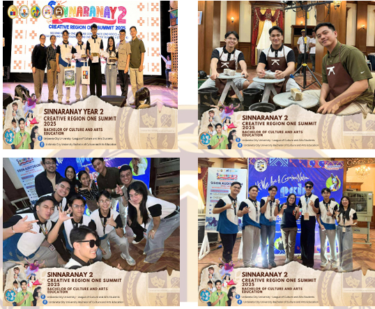
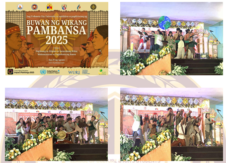

| Creative Region One Summit 2025: Creative Industries Simultaneous Workshops | |
|---|---|
|
 |
|
| The History Alive Festival 2026 |
|---|

|
| Buwan ng Wika: Sabayang Pagbigkas Competition |
|---|
|
 |
On September 15, 2025, selected students from the Bachelor of Culture and Arts Education (BCAED), together with selected faculty members from the HKCA department, participated in the Creative Region One Summit 2025: Creative Industries Simultaneous Workshops held at the Lingayen Auditorium. The activity gathered culture and arts enthusiasts, educators, artists, and trainees from different institutions across Region I to strengthen creativity, innovation, and appreciation for the cultural and creative industries. The seminar-workshop served as a training ground for participants in the field of culture and arts. Throughout the event, the delegates were exposed to various creative activities and workshops that enhanced their artistic knowledge, technical skills, and appreciation for cultural expression. The summit aimed to develop the talents and capabilities of aspiring artists, educators, and cultural advocates through hands-on learning experiences and collaborative engagements. One of the major highlights of the event was the Photography Workshop, where participants learned the basic principles and techniques of photography, including composition, lighting, framing, and storytelling through images. The workshop encouraged participants to capture meaningful moments and showcase creativity through visual arts. Aside from photography, participants also engaged in other simultaneous workshops and interactive activities related to culture, arts, and creative industries, which provided opportunities for learning, collaboration, and self-expression. The selected BCAED students actively participated in every activity and demonstrated enthusiasm, creativity, and cooperation throughout the program. The workshop not only enhanced their artistic and professional skills but also boosted their confidence in exploring different fields within the creative industry. Meanwhile, the selected HKCA faculty members provided support, guidance, and encouragement to the student participants throughout the summit. Furthermore, the seminar-workshop became an avenue for participants to interact with fellow artists, trainers, and delegates from various institutions. It promoted camaraderie, cultural appreciation, and the exchange of ideas and experiences, contributing to the holistic development of the participants as future educators and artists. In conclusion, the participation of the selected BCAED students and HKCA faculty members in the Creative Region One Summit 2025 was a meaningful and enriching experience. The seminar-workshop successfully enhanced the participants’ knowledge, skills, and appreciation for culture and arts through creative engagement and practical learning activities. The event inspired the participants to continue promoting culture, creativity, and artistic excellence in their respective communities and institutions.
The History Alive Festival 2026, organized by the College of Teacher Education– Languages and Social Studies of Urdaneta City University, was successfully held from May 4 to 6, 2026, from 8:00 AM to 5:00 PM. This three-day celebration aimed to showcase and honor the rich history and cultural heritage of Pangasinan, Urdaneta City, Urdaneta City University, and the College of Teacher Education through fun, meaningful, and educational activities. The festival became a wonderful opportunity for students to express their knowledge, creativity, and appreciation of history in exciting and interactive ways. First-year students took part by creating and managing booths at the University Mini Gym, where they presented different historical themes and cultural displays. Among the active participants were the Bachelor of Culture and Arts Education (BCAED) students, who showed their talents through booth making and Rizal film-making activities. Their participation reflected not only their creativity but also their passion for culture, arts, and history. This activity brought history to life creatively and engagingly while encouraging teamwork and school spirit. Second-year students also played an important role by facilitating film presentations at the University Audio Visual Room (AVR) about the Life and Works of Dr. Jose Rizal. These presentations allowed students and visitors to better understand Rizal’s sacrifices, contributions, and role in shaping Philippine history. BCAED students further showcased their artistic skills by participating in Rizal film-making, making the learning experience more creative, inspiring, and meaningful.One of the proudest moments of the festival was when the UCU Booth, represented by the combined efforts of BCAED, BPED, and BEED students, won 1st Place in the Booth Making Contest. This success was largely made possible because of the excellent leadership, teamwork, and dedication of the BCAED first-year students, whose effective facilitation and hard work helped bring the booth to excellence. Their achievement showed that with unity, creativity, and strong leadership, great success can be achieved. Overall, the History Alive Festival 2026 was more than just an event—it was a meaningful celebration of history, culture, and unity. It helped students deepen their understanding of their roots while building pride in their identity and heritage. More importantly, it strengthened the bond within the university community and reminded everyone of the importance of preserving history for future generations. Through this successful initiative, Urdaneta City University once again proved its commitment to developing future educators who value culture, leadership, and the importance of keeping history alive.
On August 29, 2025, the students of the College of Teacher Education of Urdaneta City University participated in the Sabayang Pagbigkas competition as part of the college’s cultural and literary activities. The event aimed to showcase the talents, creativity, confidence, and teamwork of students through synchronized speech and expressive performance. Our group dedicated time, effort, and commitment in preparing for the competition, guided by our coaches and advisers. Before the competition, the participants attended several rehearsals and whole-day practices to polish our delivery, timing, coordination, and stage presence. We carefully studied the piece assigned to us and worked together to improve our voice projection, emotions, gestures, and synchronization. Despite the challenges such as fatigue and limited time, every member remained disciplined and cooperative. The support and encouragement from our trainers, faculty members, and fellow students motivated us to give our best performance. During the competition, our group confidently performed our piece with unity, passion, and strong expression. We demonstrated teamwork and coordination, which captured the attention of both the judges and the audience. The experience was both exciting and nerve-racking, but we remained focused and determined throughout the performance. Our hard work and sacrifices paid off when our group was announced as the Champion of the Sabayang Pagbigkas competition. Winning the championship was a memorable and fulfilling experience for all of us. The competition not only strengthened our speaking and performance skills but also taught us the importance of teamwork, discipline, dedication, and perseverance. We are grateful to our coaches, teachers, and supporters who guided us throughout the journey. This achievement will always remind us that success comes from unity, hard work, and confidence in one another.